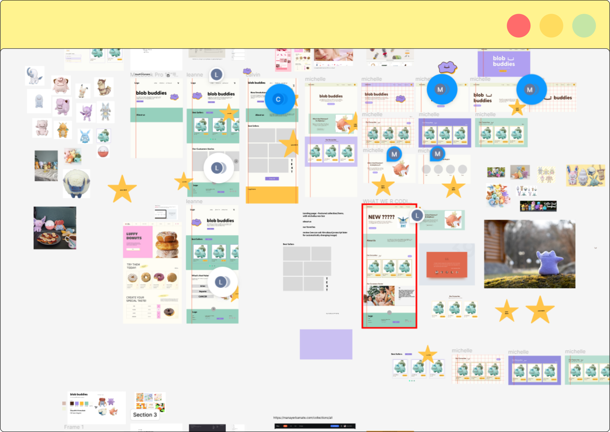

Hydrohomies is a online store selling water Pokémon plushies developed for a Web Design & Development academic course. Our goal was to design and develop a company site using HTML, CSS, and Javascript considering accessibility, ease of use, and innovative design.
Role: UI Design, Visual Identity, Web Development
Tools: Figma, HTML + CSS, JavaScript
Team: Leanne Ngong, Michelle Wang, Calvin Alexan
Duration: 5 Weeks (Oct - Nov 2023)
I crafted mid-fidelity ideations to provide a quick overview of our site's hierarchy and structure. This was pivotal in establishing the foundation for our interactions and the structure of each page element. This allowed us to embark on exploration of different designs.
My focus during ideation was on enhancing accessibility and optimizing the browsing experience. I contributed by brainstorming a design approaches and structures that primarily combines minimalism with vibrant aesthetics. Exploring various design and brand solutions, I aimed for a balance that would resonate with users.

Throughout the design iterations, we gathered feedback from our professor and peers. In response, I played a key role in steering our design direction to better align with and highlight the brand's values. Specifically, I contributed to transitioning our design towards a free-spirited, cartoonish, style that accentuated the aquatic aspects of our brand.

To emphasize accessibility and ease of use, I contributed to the development of high-fidelity wireframes. These wireframes prioritize a blend of intriguing yet cute designs, optimal usability, and visible interactions. Additionally, they incorporate inclusivity through the thoughtful use of colors, visual hierarchy, symbols, and more.

We garnered valuable insights and enriched our design and programming expertise throughout this project. Design critiques were instrumental in pinpointing critical issues like insufficient contrast and unclear interactions, fostering an emphasis on empathy and user-centric perspectives. Although we initially grappled with creating a distinctive design and collaborative challenges on Github, persistent feedback facilitated our progress. As a result, I deepened my understanding of designing for accessibility and responsiveness, honing my skills in HTML, CSS, and Javascript.